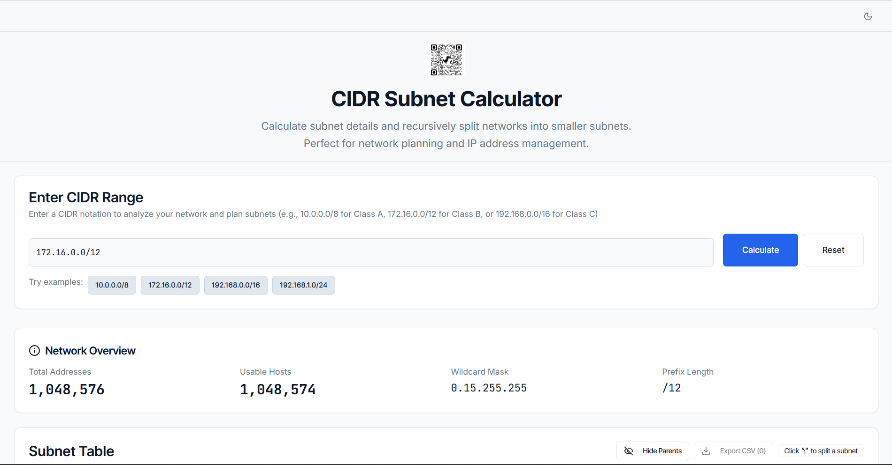

Split any CIDR, and plan Kubernetes networks that never overlap.
subnet-splitter is a subnet calculator that splits a network recursively, down to a single host, entirely in your browser, and an API that lays out VPC, node, control-plane, pod, and service ranges for EKS, GKE, AKS, and self-hosted clusters, as JSON or YAML for Terraform and other infrastructure tools. No database, no accounts, nothing stored.

The CIDR subnet calculator
Enter a CIDR and split it, then split the halves, as far as you need. The math runs in the browser; nothing is sent to the server.
Recursive splitting
Split any subnet in two, down to /32. Each split appears under its parent with a color bar for its prefix length; remove it to restore the parent.
Every number you need
Network and broadcast addresses, first and last host, total and usable hosts, subnet and wildcard masks, and the network class.
Copy and export
Copy any address or mask in one click, or select rows and export them to CSV for a spreadsheet.
Leaves only
Turn on Hide Parents to list only the smallest subnets: the allocation you will actually use.
Kubernetes network planning API
Ask for a deployment size and a provider, and get back a plan whose node, control-plane, pod, and service ranges are checked never to overlap. EKS subnets span at least two availability zones; GKE and AKS subnets are regional.
curl -X POST http://127.0.0.1:5000/api/k8s/plan \
-H "Content-Type: application/json" \
-d '{"deploymentSize":"professional","provider":"eks","vpcCidr":"10.100.0.0/18"}'Add ?format=yaml for YAML. "networkMode": "private" drops public subnets for internal load-balancer subnets and NAT egress, and podsCidr, servicesCidr, and availabilityZones fit a plan beside clusters you already run. Providers are eks, gke, aks, and kubernetes.
Deployment tiers
| Tier | For |
|---|---|
micro | One node, minimal allocation: a proof of concept. |
standard | Development and testing, 1 to 3 nodes. |
professional | Small production, 3 to 10 nodes, two availability zones. |
enterprise | Large production, 10 to 50 nodes, three availability zones with high availability. |
hyperscale | Global scale, 50 to 5,000 nodes across three availability zones. |
GET /api/k8s/tiers returns every tier's subnet sizes, and the running server documents the whole API at /api/docs/ui. The API reference describes every field.
Run it
With Node.js 24 or 26 and npm 11, clone the repository, install the exact dependencies from its lockfile, and start the development server on 127.0.0.1:5000:
git clone https://github.com/nicholashoule/subnet-splitter.git
cd subnet-splitter
npm ci
npm audit # 0 vulnerabilities before running anything
npm run dev # http://127.0.0.1:5000For production, build once and run the self-contained bundle anywhere Node.js runs; node_modules is not needed at runtime.
npm run build # client to dist/public, server to dist/index.cjs
npm run smoke # start the build and check it over HTTP
node dist/index.cjsConfiguration
| Variable | Default | Purpose |
|---|---|---|
PORT | 5000 | Port for the API and the web app. |
HOST | 0.0.0.0 in production | Interface to bind; development binds 127.0.0.1. |
TRUST_PROXY | false | Trusted proxy hops or addresses, so rate limiting sees real client IPs behind a load balancer. |
Health checks for load balancers and Kubernetes probes are at /health, /health/ready, and /health/live, and are never rate limited.
Security by design
There is no database and no stored user data, so there is nothing to leak. The calculator runs in the browser, and the API computes each plan from its request alone.
Production serves a strict Content Security Policy with script-src 'self' and Helmet's security headers. Every API request is validated with Zod and capped at 16 KB, API routes are rate limited per client, and server errors never include internal details. SECURITY.md says how to report a vulnerability.
Documentation
- README features, setup, configuration, and testing
- API reference every endpoint, field, and response
- Kubernetes network planning how plans are laid out, and the formulas behind each size
- EKS, GKE, and AKS audits how each plan meets the provider's requirements
- Security reference CSP, headers, and rate limits
- Changelog what changed in each release